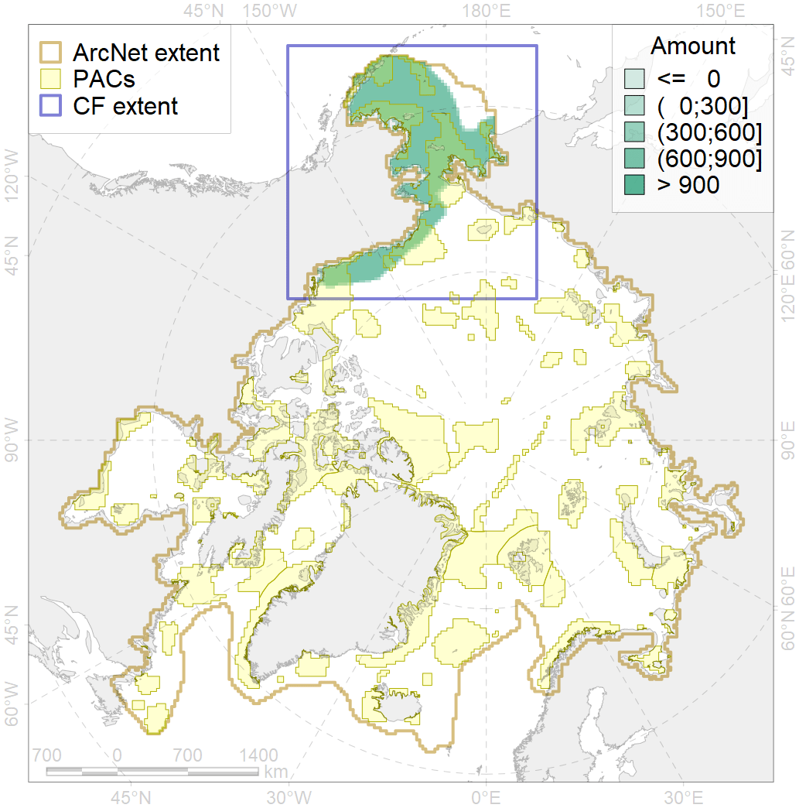
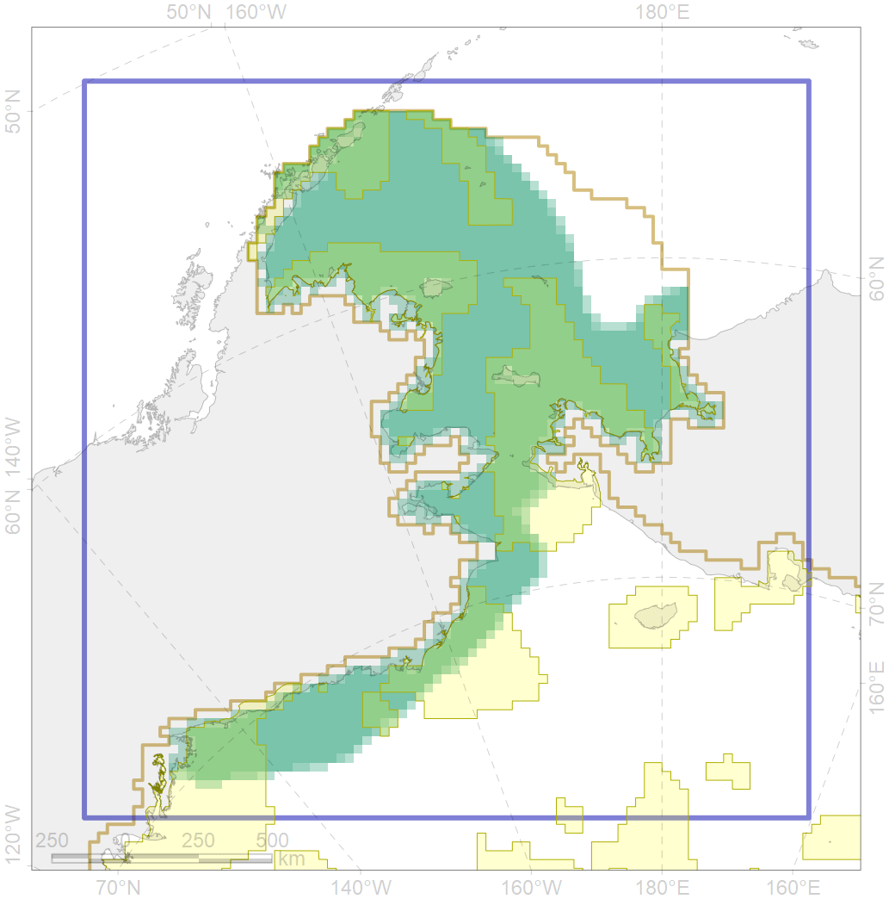

4044

| CF ID | 4044 |
| CF Name | Range of the Pacific cod (Gadus macrocephalus) |
| Time Period | 1950-2010s |
| Source(s) | Popova, Chernova in Reshetnikov, 2013; Coad, Reist, 2018; Mecklenburg et al., 2018 |
| Seasonality | January-December |
| Depth Horizon | 0-1280 |
| Methodology | Compiled from literature sources based on field observations |
| Author Name | N. Chernova |
| Notes | Pacific cod (Gadus macrocephalus) (F 38) In Mecklenburg et al., 2018 - part, excluding G.ogac |
| Conservation Target Set in the Scenario | 0.03 |
| Conservation Target Achieved in the Scenario | 0.441 (Scenario: 1470.8%) |
| PAC ID | Proportion in the PAC | Contribution to ArcNet Target Achievement | PAC’s Contribution to the Achieved Target |
|---|---|---|---|
| 1 | 4.7% | 149.2% | 10.1% |
| 2 | 3.8% | 103.4% | 7.0% |
| 3 | 9.5% | 289.7% | 19.7% |
| 4 | 2.0% | 54.5% | 3.7% |
| 5 | 16.1% | 484.7% | 33.0% |
| 6 | 0.1% | 3.2% | 0.2% |
| 60 | 4.7% | 117.6% | 8.0% |
| 61 | 0.1% | 2.3% | 0.2% |
| 62 | 4.2% | 129.6% | 8.8% |
| inner | 45.1% | 1334.3% | 90.7% |
| outer | 54.9% | 136.4% | 9.3% |